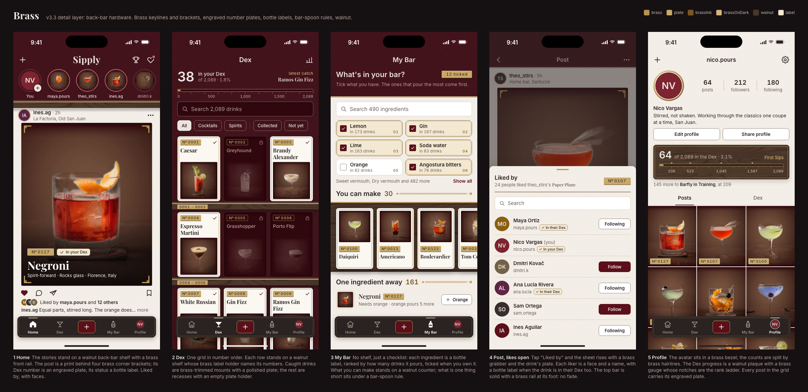
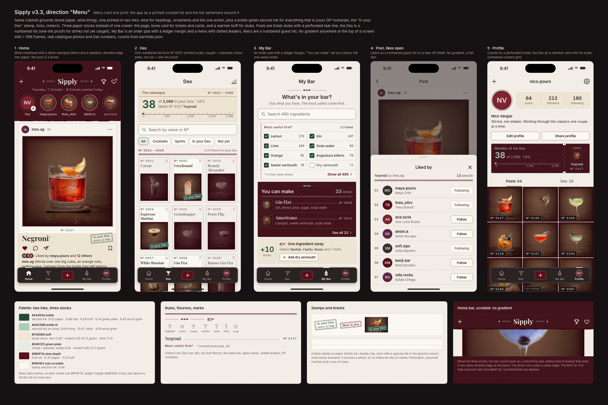
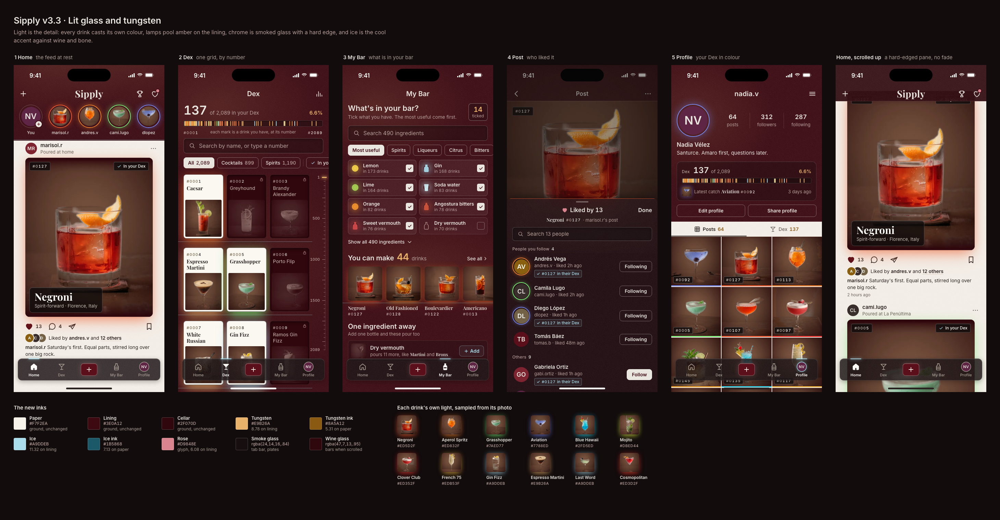

Jan's note (7 Oct, build 17): the app is too simple, it is either burgundy or cream, add details to each page; keep the scrolled look but drop the top gradient. Each direction mocks Home, Dex, My Bar, the post with its likers sheet open, and Profile at 440×956. Click a sheet to open it at full size.
Scores are 1 to 10 on five criteria, averaged: does it fix "too simple" on every page, does it stay Sipply (Cabinet rules), legibility and WCAG AA, buildable in React Native without lag, and taste (premium, not costume).

Back-bar hardware: brass keylines and corner brackets, an engraved plate on every Dex number, walnut shelves the drinks stand on, bottle-label checklist.
| Fixes "too simple" on every page | 8.5 |
| Stays Sipply (Cabinet intact) | 9 |
| Legibility + AA | 8.5 |
| Buildable, no lag | 8 |
| Taste | 8 |
Keeps every Cabinet idea (Dex on lining, caught = bone mount, not yet = recess) and adds a real third and fourth material, brass and walnut, that read on both grounds. Every page gets a signature piece. All static Views, a few memoised SVGs and one 10 KB texture.

Printed in two inks (wine plus bottle green for what is yours) on three paper stocks: posts are tickets, the Dex a numbered catalogue, My Bar an order pad and a menu.
| Fixes "too simple" on every page | 8 |
| Stays Sipply (Cabinet intact) | 6.5 |
| Legibility + AA | 9 |
| Buildable, no lag | 8.5 |
| Taste | 7.5 |
The most readable and the cheapest to build, and bottle green is a classy second colour. But it moves the Dex onto paper with dashed proofs, so the mount/recess change is gone; it squares the feed photo and takes the name off it; the tilted worn stamps and the pointing hand drift toward costume.

Light is the detail: each drink casts its own colour (glows, spill, story rings), smoked-glass chrome, ice blue as the cool accent.
| Fixes "too simple" on every page | 8.5 |
| Stays Sipply (Cabinet intact) | 5 |
| Legibility + AA | 7.5 |
| Buildable, no lag | 6 |
| Taste | 6.5 |
Adds the most colour, and its Dex spectrum bar, number rail and coloured ingredient icons are the best single ideas of the three. But it reverses Cabinet's "no glows, no glass" rule, puts My Bar and the Profile header on wine (more burgundy, not less), needs coloured shadows on every card, two scroll-synced blurred panes and a re-bake of the photos.
Sources: brass/, menu/, glow/ in this folder (contact.png, per-screen PNGs, spec.md each). Judged 7 Oct 2026.